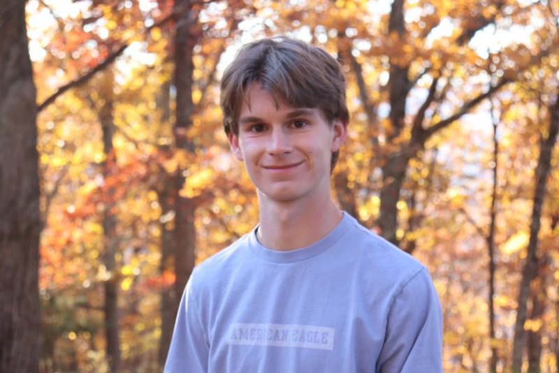

Daniel Sarver
Sports Journalist

dsarver@terpmail.umd.edu
LinkedIn: https://www.linkedin.com/in/daniel-sarver-857163289/
X: https://x.com/THEdanielsarver
Github: https://github.com/danielsarver/Daniel-Sarver-Jour352
Experience
Beat Reporter
Terrapin Sports Central
August 2023 – Present
I covered and wrote articles about the UMD women’s lacrosse, women’s soccer, and men’s soccer teams. I interviewed players and staff and wrote gamers, previews, and features.
Beat Reporter
WMUC Sports
August 2022 – May 2023
I covered and wrote articles about the UMD women’s soccer, women’s basketball, and softball teams. I interviewed players and staff and wrote gamers, previews, and features.
Outdoor Staff
Roanoke Country Club
April 2022 – August 2023
I worked on the golf course and cleaned clubs and carts, attended to ranges, and assisted members. I also engaged in the organization and production of golf tournaments.
Skills
- Beat reporting
- Feature writing
- skill
Education
- Bachelor of Arts, Journalism, University of Maryland, Expected Graduation: Dec. 2025
- Advanced Diploma, William Byrd High School, May 2022